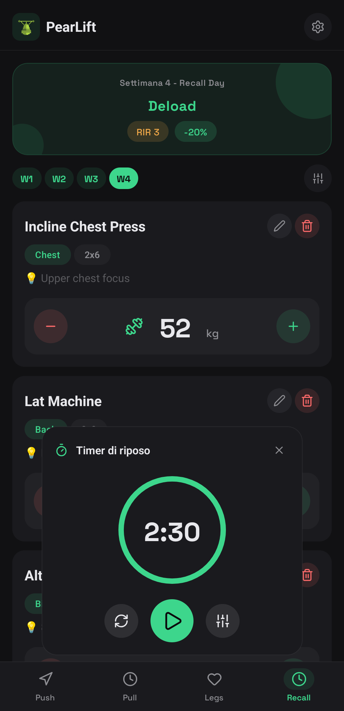
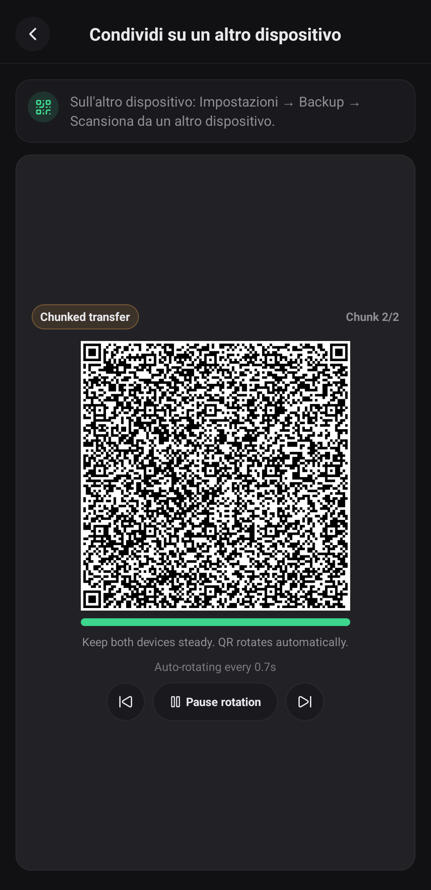

Program-driven sessions
Organize multi-day plans, reorder exercises, and keep the next training block close to the workout itself.
PearLift is a privacy-focused workout tracker built for fast lifting sessions, resilient Android rest timers, and user-controlled local backups. It stays out of your way and keeps your workout history under your control.
The app is built to keep planning, training, and backup actions close together without turning the interface into a settings maze.


PearLift focuses on the actual training loop: set logging, progressive overload, rest timing, and backups you can export.
Organize multi-day plans, reorder exercises, and keep the next training block close to the workout itself.
Track weights, reps, and unit preferences while keeping adjustment logic inside the app instead of in a spreadsheet.
On Android, PearLift uses a local foreground service so your rest timer survives backgrounding and still completes on time.
PearLift is designed around local storage and explicit user actions. It avoids the usual mobile app surveillance stack.
Workout programs, settings, and history are stored locally on your device. PearLift does not require you to create an account.
The app only asks for permissions that support visible features such as QR scanning, notifications, and Android background timers.
PearLift treats backups as an explicit user-controlled action instead of an always-on sync pipeline.
Export your workout data to a JSON backup file or restore from an existing backup when you choose to.
Share backups between devices with QR transfer. The flow is initiated by the user on both ends and is meant for explicit transfer, not hidden background syncing.